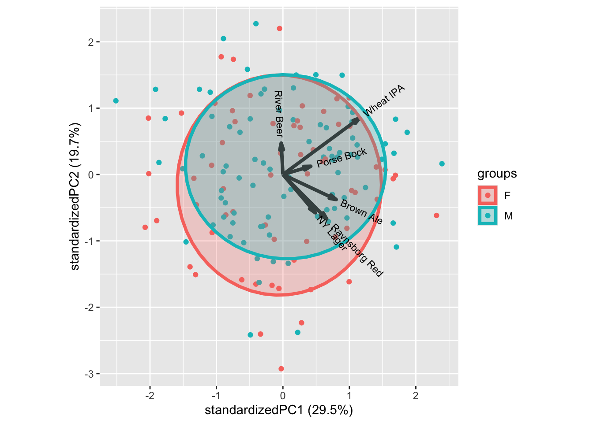

Chapter 16 Preference Mapping
[some narrative]
16.2 PCA
PCA is a nice tool to get overview of structure in data. Here we explicitly are interested in hedonic liking of the 6 beer types, and whether there are certain beer-drinker profiles, such as some prefer dark beer, while others like wheat or pilsner.
The liking data is in long format, and as we want to see correlation between different beers we need to wrap the liking into wide format, this can be done using spread from tidyverse. Further, there is incomplete liking data, and here we only sustain hedonic answers from consumers with all 6 liking answers. This filter can be computed in different ways, here drop_na() is used.
library(data4consumerscience)
library(tidyverse)
data("beerliking")
xbeerliking <- beerliking %>%
spread(Beer,Liking) %>% # make into wide format
drop_na()PCA is computed on the liking columns of this matrix
mdlPCA <- prcomp(xbeerliking[,13:18])
ggbiplot::ggbiplot(mdlPCA)Those who like Ravnsborg red also likes NY Lager and to some extend Brown ale, while Porse Bock and Wheat IPA also attracts the same consumers.
In general there is a trend towards all liking score being positively correlated, meaning, that costumers overall like (or dis like) beer. This can both be a real phenomena, but also an artifact of the consumers not using the scale in a similar fashion. It is a very common phenomena for sensory and hedonic data.
We can glue on demographic characteristics, such as age, gender, etc., as well as questions on interest in food and beer on this figure to understand the consumer population.
ggbiplot::ggbiplot(mdlPCA, groups = xbeerliking$Gender, ellipse = T)
ggbiplot::ggbiplot(mdlPCA, groups = factor(xbeerliking$`Beer knowledge`), ellipse = T)
In general, the classical demographics do not relate to liking patterns, as shown by gender above. Try the others to confirm.
For interest in food and beer there are patterns. One example is the Beer knowledge with higher liking scores for more beer knowledge. Similar intuitive patterns can be seen for some of the other characteristics.
16.3 Analysis by PLS
Predictors can be objective characteristics of the products or CATA type data, while response is hedonic liking data. [minimum 5 samples
X = CATA (Beer_XYZmatrix.xlsx, sheet = X CATA (coll.)+Y liking (aver.)), Y = Living average Y2 = Liking for each consumer = t(Y (long thin))
Objective = Visualize to get patterns related to liking, and which deescriptors are merely irrelevant.
16.4 L-PLS [For the future…]
The data used in this section is from the paper: Giacalone, Davide, Wender L.P. Bredie, and Michael Bom Frøst. “‘All-In-One Test’ (AI1): A Rapid and Easily Applicable Approach to Consumer Product Testing.” Food quality and preference 27.2 (2013): 108–119. Web.. Data can be found in the data4consumerscience-package as beercata, beerdemo, beerliking
L-PLS is a valuable tool in identifying the sensory attributes and consumer background characteristics that contribute to a consumer’s liking of a product, such as beer.
A L-PLS model is created using three data blocks: X1, X2, and X3. X1 is an IxN matrix that contains consumer liking scores for each sample, X2 is an IxJ matrix that includes sensory attributes for each sample, and X3 is a KxN matrix that comprises consumer background data. I represents the number of samples (beer), N represents the number of consumers, J represents the number of sensory variables, and K represents the number of consumer background variables.
There are two ways to perform L-PLS: exo and endo. In the exo-LPLSR model, X1 serves as the regressor, while in the endo-LPLSR model, X2 and X3 are the regressors. The exo-LPLSR model typically explains more of X than the endo-LPLSR model because the exo-LPLSR derives its bilinear components from X, whereas the endo-LPLSR derives its components from Y and Z. The difference in the plot’s appearance can be predicted from the explained variance of each model type.
If both plots are similar in nature and in terms of the interpretation of the correlation loading plots, it may indicate consistent co-variation between the three matrices.
The exo version will only be showcased here, but the principle is the same, and endo can be useful for data exploration.
library(data4consumerscience)
data("beercata")
data("beerdemo")
data("beerliking")##Creating X1, X2, X3.
The preparation of the data, requires quite a lot of data manipulation.
# Load necessary libraries
library(tidyverse)
library(tibble)
# Prepare data for LPLS analysis
## Y - Beer Liking data
X1 <- beerliking %>%
select(Beer, Liking, Consumer.ID) %>%
pivot_wider(names_from = Consumer.ID, values_from = Liking) %>%
column_to_rownames("Beer") %>%
select_if(~!any(is.na(.)))
## X - Beer Attributes data
colnames(beercata) <- gsub("S_", "", colnames(beercata))
X2 <- beercata %>%
select(Beer, Flowers:Vinous) %>%
pivot_longer(cols = !Beer, names_to = "Attribute", values_to = "Value") %>%
group_by(Beer, Attribute) %>%
dplyr::summarise(Sum_value = sum(Value)) %>%
pivot_wider(names_from = "Attribute", values_from = "Sum_value", values_fill = 0) %>%
column_to_rownames("Beer")
## Z - Consumer Demographics data
# select subset of columns and create binary columns for categorical variables
binary_cols <- c("Gender", "Age", "Income", "Householdsize", "Beer types/month")
for (col in binary_cols) {
if (is.factor(beerdemo[[col]]) | is.character(beerdemo[[col]])) {
levels <- unique(beerdemo[[col]])
for (level in levels) {
new_col <- paste(col, level, sep = "_")
beerdemo[[new_col]] <- ifelse(beerdemo[[col]] == level, "1", "0")
}
}
}
# pivot longer and summarize to calculate sum values for each Consumer ID-Attribute combination
X3 <- beerdemo %>%
select(-(Gender:`Beer types/month`),`Interest in food`:`Beer types/month_9 - 16`,`Consumer ID`) %>%
mutate_at(vars(-`Consumer ID`),
.funs = list(~as.factor(.) %>% as.numeric())) %>%
pivot_longer(cols =`Interest in food`:`Beer types/month_9 - 16` , names_to = "Attribute", values_to = "Value") %>%
group_by(`Consumer ID`, Attribute) %>%
dplyr::summarise(sum_Value = sum(Value)) %>%
pivot_wider(names_from = "Consumer ID", values_from = "sum_Value", values_fill = 0) %>%
column_to_rownames("Attribute")
# keep only columns in Y
col_names <- names(X1)
X3 <- X3[,col_names]
# LPLS function only accepts matrix. Convert data frames to matrices.
X1_mat <- as.matrix(X1)
X2_mat <- as.matrix(X2)
X3_mat <- as.matrix(X3)##Building the model: The L-PLS model can be built, using the lpls function from the multiblock package.
library(multiblock)
set.seed(123)
#Scale the Z-matrix as we have semi-contious and binary data.
lp_exo <- lpls(X1_mat,X2_mat,X3_mat,type = "exo",scale = c(F,F,T),doublecenter = T,ncomp = 5)###Finding the explained variance for exo L-PLS
The explained variance for the exo L-PLS can easily be sacked from the model object, and displayed nicely in a table using the kableExtra package.
library(knitr)
library(kableExtra)
expVarExo <- t(as.data.frame(lp_exo$vars)*100)
colnames(expVarExo) <- paste0("Comp ", 1:5)
rownames(expVarExo) <- paste0("X", 1:3)
#Create a table
kbl(expVarExo, caption = "Explained Variance by Component (%)",digits = 0) %>%
kable_paper("hover",full_width = F)| Comp 1 | Comp 2 | Comp 3 | Comp 4 | Comp 5 | |
|---|---|---|---|---|---|
| X1 | 58 | 14 | 16 | 9 | 3 |
| X2 | 22 | 22 | 16 | 21 | 19 |
| X3 | 1 | 2 | 1 | 1 | 1 |
The explained variance is first sacked from the L-PLS object, and stored in a data-frame, from where it is transposed, and converted to percentage (%). kbl function is then used to get a nice table.
From looking at the table, one would expect the consumer descriptors to be close to origin in terms of scores. One could have a look at the endo version of the L-PLS to get a better understanding of the consumer descriptors.
###Cross-validation Next let us have a look how many components we should look at, by doing a jack-knifing cross-validation on the consumers:
lp.cv2 <- lplsCV(lp_exo, segments2 = as.list(1:dim(X1)[2]))## Segment 1 of 150 completed
## Segment 2 of 150 completed
## Segment 3 of 150 completed
## Segment 4 of 150 completed
## Segment 5 of 150 completed
## Segment 6 of 150 completed
## Segment 7 of 150 completed
## Segment 8 of 150 completed
## Segment 9 of 150 completed
## Segment 10 of 150 completed
## Segment 11 of 150 completed
## Segment 12 of 150 completed
## Segment 13 of 150 completed
## Segment 14 of 150 completed
## Segment 15 of 150 completed
## Segment 16 of 150 completed
## Segment 17 of 150 completed
## Segment 18 of 150 completed
## Segment 19 of 150 completed
## Segment 20 of 150 completed
## Segment 21 of 150 completed
## Segment 22 of 150 completed
## Segment 23 of 150 completed
## Segment 24 of 150 completed
## Segment 25 of 150 completed
## Segment 26 of 150 completed
## Segment 27 of 150 completed
## Segment 28 of 150 completed
## Segment 29 of 150 completed
## Segment 30 of 150 completed
## Segment 31 of 150 completed
## Segment 32 of 150 completed
## Segment 33 of 150 completed
## Segment 34 of 150 completed
## Segment 35 of 150 completed
## Segment 36 of 150 completed
## Segment 37 of 150 completed
## Segment 38 of 150 completed
## Segment 39 of 150 completed
## Segment 40 of 150 completed
## Segment 41 of 150 completed
## Segment 42 of 150 completed
## Segment 43 of 150 completed
## Segment 44 of 150 completed
## Segment 45 of 150 completed
## Segment 46 of 150 completed
## Segment 47 of 150 completed
## Segment 48 of 150 completed
## Segment 49 of 150 completed
## Segment 50 of 150 completed
## Segment 51 of 150 completed
## Segment 52 of 150 completed
## Segment 53 of 150 completed
## Segment 54 of 150 completed
## Segment 55 of 150 completed
## Segment 56 of 150 completed
## Segment 57 of 150 completed
## Segment 58 of 150 completed
## Segment 59 of 150 completed
## Segment 60 of 150 completed
## Segment 61 of 150 completed
## Segment 62 of 150 completed
## Segment 63 of 150 completed
## Segment 64 of 150 completed
## Segment 65 of 150 completed
## Segment 66 of 150 completed
## Segment 67 of 150 completed
## Segment 68 of 150 completed
## Segment 69 of 150 completed
## Segment 70 of 150 completed
## Segment 71 of 150 completed
## Segment 72 of 150 completed
## Segment 73 of 150 completed
## Segment 74 of 150 completed
## Segment 75 of 150 completed
## Segment 76 of 150 completed
## Segment 77 of 150 completed
## Segment 78 of 150 completed
## Segment 79 of 150 completed
## Segment 80 of 150 completed
## Segment 81 of 150 completed
## Segment 82 of 150 completed
## Segment 83 of 150 completed
## Segment 84 of 150 completed
## Segment 85 of 150 completed
## Segment 86 of 150 completed
## Segment 87 of 150 completed
## Segment 88 of 150 completed
## Segment 89 of 150 completed
## Segment 90 of 150 completed
## Segment 91 of 150 completed
## Segment 92 of 150 completed
## Segment 93 of 150 completed
## Segment 94 of 150 completed
## Segment 95 of 150 completed
## Segment 96 of 150 completed
## Segment 97 of 150 completed
## Segment 98 of 150 completed
## Segment 99 of 150 completed
## Segment 100 of 150 completed
## Segment 101 of 150 completed
## Segment 102 of 150 completed
## Segment 103 of 150 completed
## Segment 104 of 150 completed
## Segment 105 of 150 completed
## Segment 106 of 150 completed
## Segment 107 of 150 completed
## Segment 108 of 150 completed
## Segment 109 of 150 completed
## Segment 110 of 150 completed
## Segment 111 of 150 completed
## Segment 112 of 150 completed
## Segment 113 of 150 completed
## Segment 114 of 150 completed
## Segment 115 of 150 completed
## Segment 116 of 150 completed
## Segment 117 of 150 completed
## Segment 118 of 150 completed
## Segment 119 of 150 completed
## Segment 120 of 150 completed
## Segment 121 of 150 completed
## Segment 122 of 150 completed
## Segment 123 of 150 completed
## Segment 124 of 150 completed
## Segment 125 of 150 completed
## Segment 126 of 150 completed
## Segment 127 of 150 completed
## Segment 128 of 150 completed
## Segment 129 of 150 completed
## Segment 130 of 150 completed
## Segment 131 of 150 completed
## Segment 132 of 150 completed
## Segment 133 of 150 completed
## Segment 134 of 150 completed
## Segment 135 of 150 completed
## Segment 136 of 150 completed
## Segment 137 of 150 completed
## Segment 138 of 150 completed
## Segment 139 of 150 completed
## Segment 140 of 150 completed
## Segment 141 of 150 completed
## Segment 142 of 150 completed
## Segment 143 of 150 completed
## Segment 144 of 150 completed
## Segment 145 of 150 completed
## Segment 146 of 150 completed
## Segment 147 of 150 completed
## Segment 148 of 150 completed
## Segment 149 of 150 completed
## Segment 150 of 150 completedlp.cv2$rmsep## Comp1 Comp2 Comp3 Comp4 Comp5
## 0.6985154 0.6882824 0.6859785 0.6892245 0.6893994It looks like 2 components is sufficient.
###Vizulization Now we would like to visuzlalize our L-PLS model. When using L-PLS for vizulization one should use the orthognoal exo, as this will give the orthogonal scores. We build the orthogonal exo in the same way as before, but chainging the type.
lp_exo_ort <- lpls(X1_mat,X2_mat,X3_mat,type = "exo_ort",scale = c(F,F,T),doublecenter = T,ncomp = 5)Now we plot the L-PLS model. One can chose to plot, the X1, X2 or X3 correlations, or perhaps a combination of 2, or all.
par(mfrow=c(2,2))
plot(lp_exo,doplot = c(F,F,T)) #X3 correlations
plot(lp_exo,doplot = c(F,T,F)) #X1 correlations
plot(lp_exo,doplot = c(T,T,F)) #X2 and X1 correlations
plot(lp_exo,doplot = c(F,T,T)) #X1 and X3 correlations
plot(lp_exo,doplot = c(T,T,T)) #combinedFrom the plots, the sensory attribute Berries is correlated with the sensory attribute Herbs. These two sensory attributes is in turn correlated with the beer River Beer. In turn River Beer is opposite of the beer Brown Ale, which seems to be very Foamy. In this case our consumer background descriptors do not seem to explain a whole lot. But it does seem like a young age Age 18-25 is associated with a low income (Income 0-10.000). Where a consumer of such description tends to like Porse Bock.
It is always a good idea to confirm the observed correlations by plotting the raw data. Lets have a look at some of them.